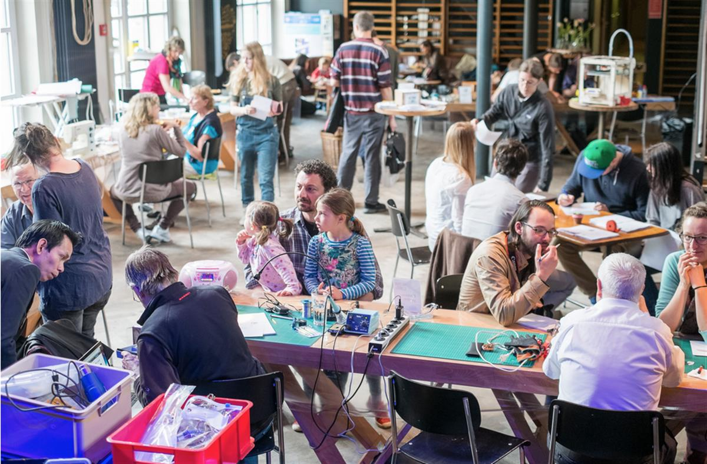
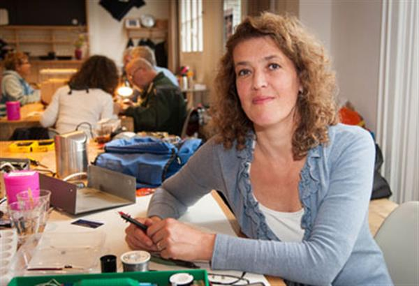

What is a Repair Café?
Repair Cafés are free meeting places and they’re all about repairing things (together). In the place where a Repair Café is located, you’ll find tools and materials to help you make any repairs you need. On clothes, furniture, electrical appliances, bicycles, crockery, appliances, toys, et cetera. You’ll also find expert volunteers, with repair skills in all kinds of fields.
Visitors bring their broken items from home. Together with the specialists they start making their repairs in the Repair Café. It’s an ongoing learning process. If you have nothing to repair, you can enjoy a cup of tea or coffee. Or you can lend a hand with someone else’s repair job. You can also get inspired at the reading table – by leafing through books on repairs and DIY.
There are over thousand Repair Cafés worldwide. Visit one in your area or start one yourself! See also the house rules we use at the Repair Café.
Why a Repair Café?

We throw away vast amounts of stuff. Even things with almost nothing wrong, and which could get a new lease on life after a simple repair. The trouble is, lots of people have forgotten that they can repair things themselves or they no longer know how. Knowing how to make repairs is a skill quickly lost. Society doesn’t always show much appreciation for the people who still have this practical knowledge, and against their will they are often left standing on the sidelines. Their experience is never used, or hardly ever.
The Repair Café changes all that! People who might otherwise be sidelined are getting involved again. Valuable practical knowledge is getting passed on. Things are being used for longer and don’t have to be thrown away. This reduces the volume of raw materials and energy needed to make new products. It cuts CO2 emissions, for example, because manufacturing new products and recycling old ones causes CO2 to be released.
The Repair Café teaches people to see their possessions in a new light. And, once again, to appreciate their value. The Repair Café helps change people’s mindset. This is essential to kindle people’s enthusiasm for a sustainable society.
But most of all, the Repair Café just wants to show how much fun repairing things can be, and how easy it often is. Why don’t you give it a go?
Who thought up the idea?

The Repair Café was initiated by Martine Postma. Since 2007, she has been striving for sustainability at a local level in many ways. Martine organised the very first Repair Café in Amsterdam, on October 18, 2009. It was a great success.
This prompted Martine to start the Repair Café Foundation. Since 2011, this non-profit organisation has provided professional support to local groups in the Netherlands and other countries wishing to start their own Repair Café. Do you want to know more about the origins of Repair Café? Read the book that Martine wrote (in Dutch). Or invite Martine for a lecture at your company or organisation.
Not competing with professional repair specialists
The Repair Café Foundation sometimes gets asked whether access to free repair get-togethers is competing with professional repair specialists. The answer is; quite the opposite. Organisers want to use Repair Cafés across the whole country to focus attention on the possibility of getting things repaired. Visitors are frequently advised to go to the few professionals still around.
Furthermore, people who visit Repair Cafés are not usually customers of repair specialists. They say that they normally throw away broken items because paying to have them repaired is, in general, too expensive. At the Repair Café they learn that you don’t have to throw things away; there are alternatives.
SOURCE: REPAIR CAFE